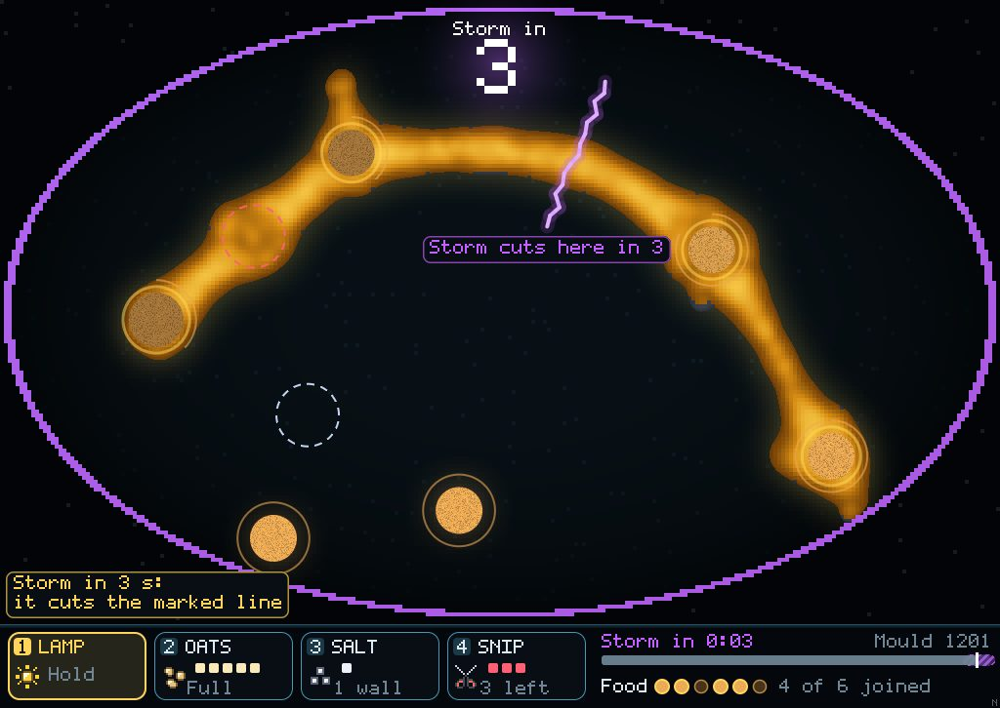
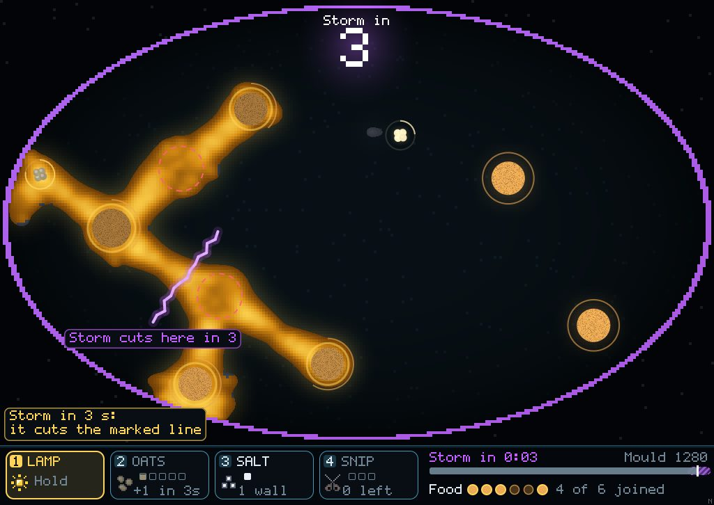
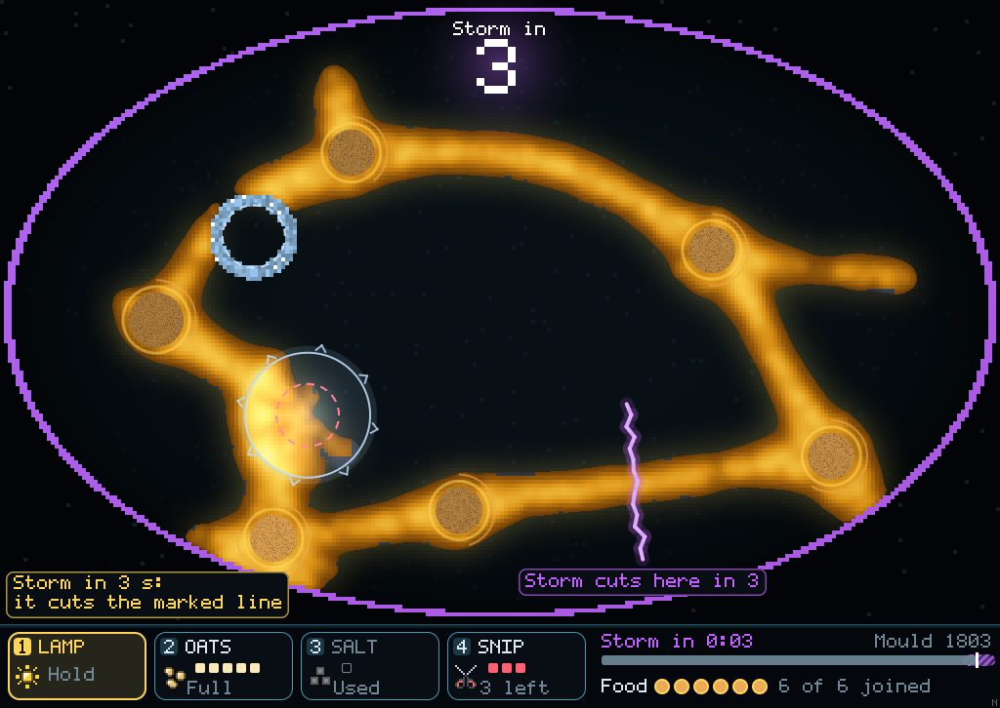
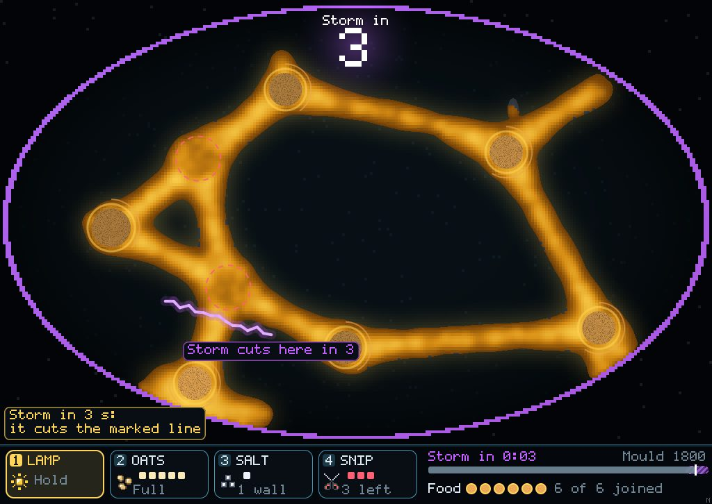
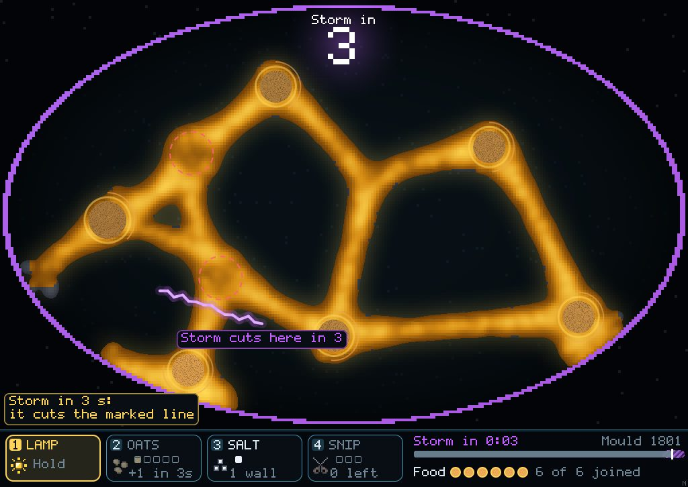
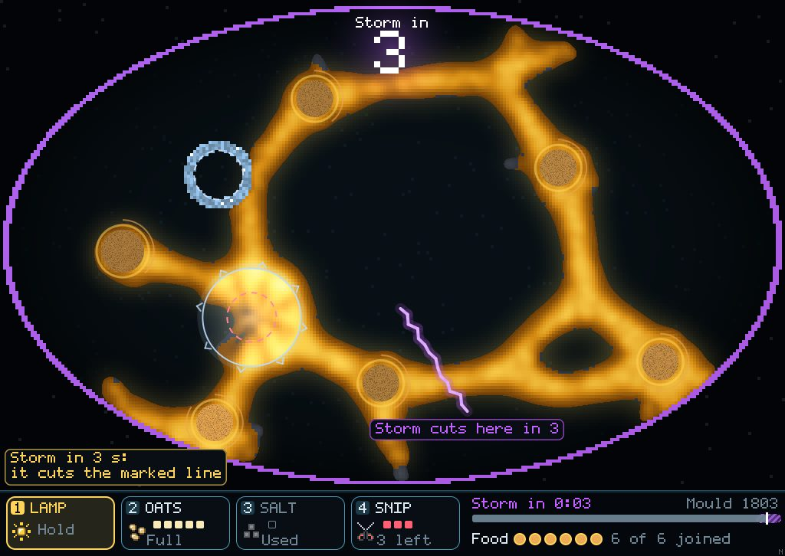
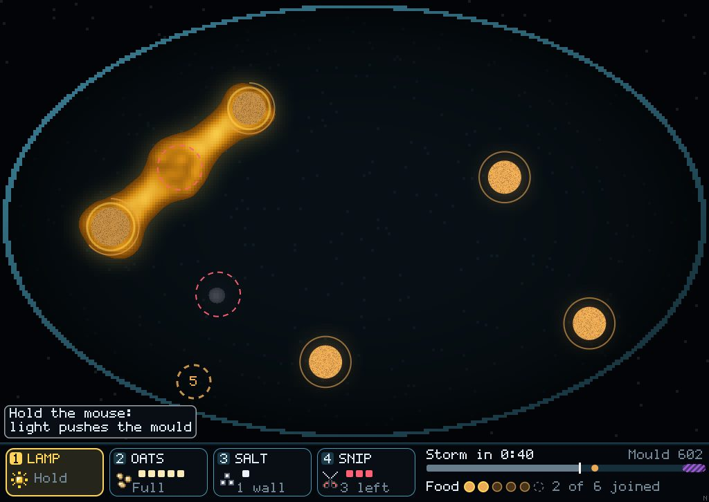
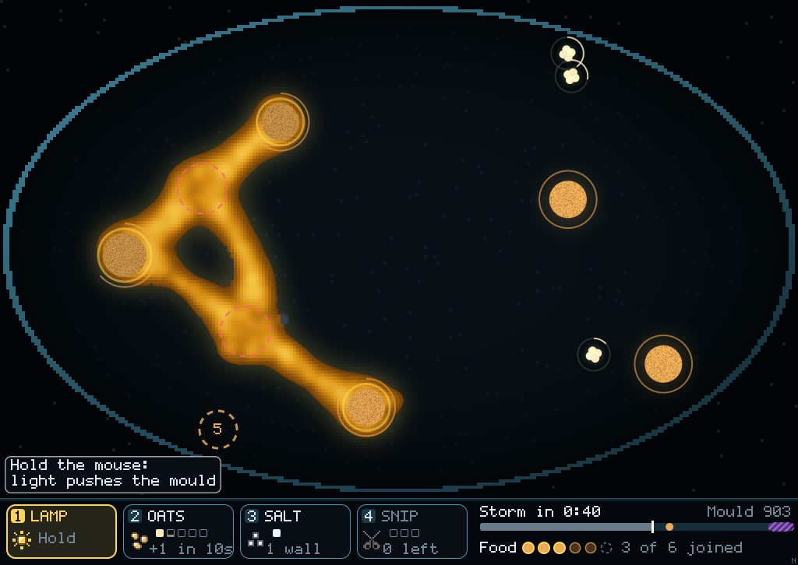
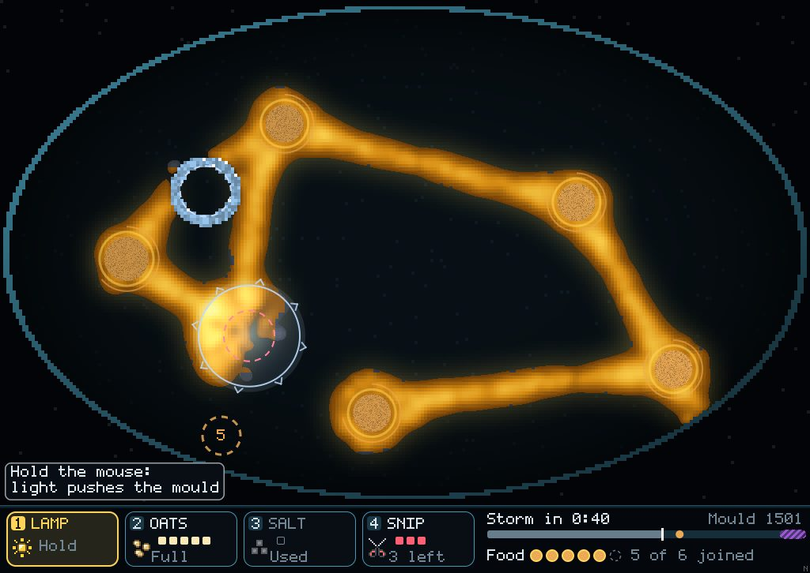

At 22.5° the mould is the threat, so the goal is to hold it back
You picked "keep 22.5°, new goals". I measured the three goals I'd suggested, and the mould meets or beats all of them with nobody playing. So here is a first try at turning the game round. Two marked patches sit on the routes from the start pile, and they smell faintly of food. The mould wants to cover them; your job is to keep it off.
Why the first goals didn't work
Quick: in 39 of 42 runs, doing nothing included, all six piles were joined by 58 s. The last pile lands at 55 s, and the mould is usually already on the spot.
Weathered: the loops route round the storm cut. Doing nothing kept all the food on 4 of 6 seeds.
Lean: every hand's network is 1.3–2.0× the shortest. A cheating pruner with unlimited snips (150 cuts a dish, each one tested first so it never cut food off) still ended at 1.40–1.84×. The mould grows back faster than you can cut.
Free dish, 22.5°, seeds 1–6, 7 scripted hands each. Food flow on didn't help either: doing nothing came out leaner (1.28–1.48×) than the plan (1.37–1.67×).
Seed 1 at 1:27, just before the storm
The dashed rings are the patches: white means clean, red means mould is on it. The guard hand rings one patch with its one salt wall and holds the lamp on the other.

Do nothing · patches 197 / 0 cells · food 4 of 6

Random · 197 / 197 · food 4 of 6

Guard · 0 / 117 · food 6 of 6
Seed 3 at 1:27

Do nothing · 197 / 197 · food 6 of 6

Random · 197 / 197 · food 6 of 6

Guard · 0 / 141 · food 6 of 6
A full patch is 197 cells. "Food" is piles joined in one piece when the storm strikes.
Seed 1 at 0:50

Do nothing, 0:50

Random, 0:50

Guard, 0:50
Counts, seeds 1–6
Seeds where mould was on each patch at the bell, and seeds where all six piles were joined. The smell is how strongly a patch smells, as a share of a full pile of food.
Smell
Hand
Patch A hit
Patch B hit
All food joined
none
do nothing
5 of 6
3 of 6
6 of 6
none
random
5 of 6
2 of 6
6 of 6
none
guard
0 of 6
0 of 6
6 of 6
0.1
do nothing
6 of 6
4 of 6
3 of 6
0.1
random
6 of 6
6 of 6
5 of 6
0.1
guard
0 of 6
6 of 6
5 of 6
0.2
do nothing
6 of 6
5 of 6
3 of 6
0.2
guard
0 of 6
6 of 6
4 of 6
0.5
do nothing
6 of 6
6 of 6
1 of 6
0.5
guard
0 of 6
6 of 6
4 of 6
The smell makes the patch a trap as well as a target. Mould crowds onto it and doesn't go on to the food: at 0.1 doing nothing lost food on 3 of 6 seeds, and at 0.5 on 5 of 6. That's a second reason to guard it, and one you can see happen.
Salt always saves a patch. One ring kept patch A clean on every seed at every smell.
The lamp only works with no smell. Held on patch B, it kept it clean on 6 of 6 with no smell, and on 0 of 6 once the patch smells. With one salt wall, the second patch is the hard part. That could be the puzzle, or the lamp may need to be stronger.
This is a scripted guard, not a person. It never moves the lamp or uses oats as a decoy, so a person should do better.
Not decided yet
The stars. One idea is a ladder: one patch clean, both clean, then both clean with all food joined. As it stands, doing nothing would still take the first star on 2 of 6 seeds, because it sometimes misses patch B.
The smell strength, and whether the lamp should beat it.
Nothing is on by default yet. The patches are a switch (spared=2) in the probe, and 45° is still the shipped angle.